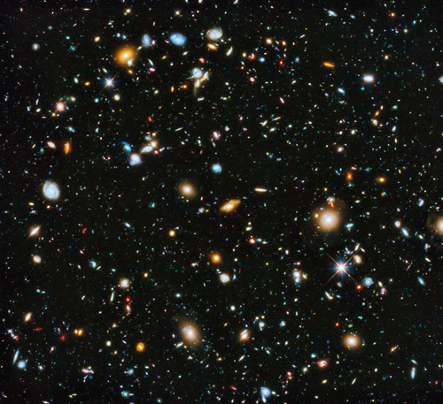
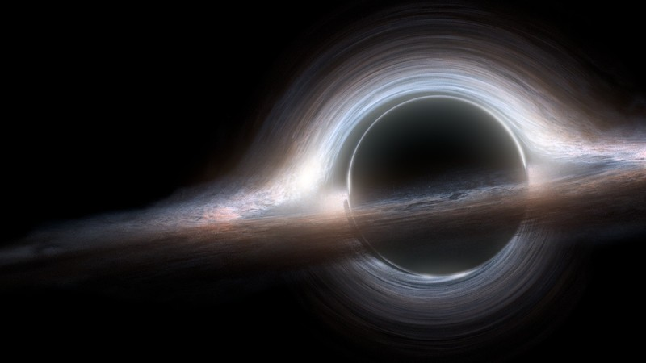
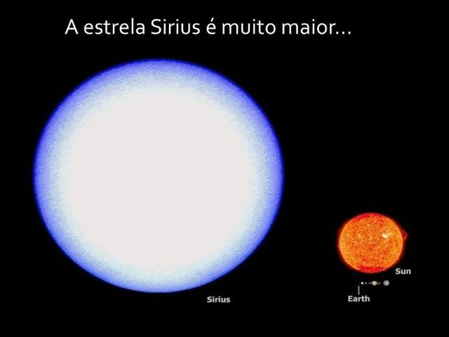
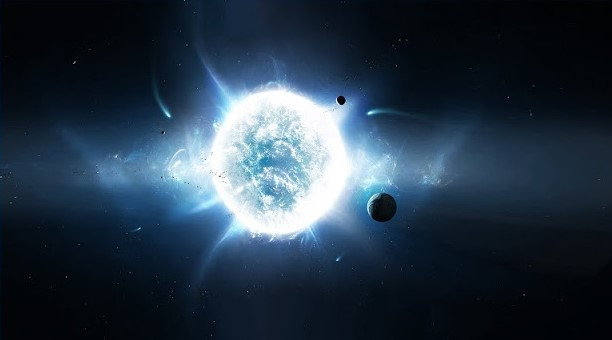

O Universo
Universo
O universo é a soma do espaço e do tempo e as mais variadas formas de matéria, como planetas, estrelas, galáxias e os componentes do espaço intergaláctico
Buraco Negro
Buraco negro é um dos fenômenos mais incríveis e curiosos do universo
Formação
Como um buraco negro é formado?
Para isso é necessário discutir sobre alguns assuntos inciais, como:
Gravidade
Sabemos que os corpos celestes possuem gravidade e que ela é diretamente proporcional à massa
Estrela
Uma estrela é uma grande e luminosa esfera de plasma, mantida íntegra pela gravidade e pela pressão de radiação

Estrela
Tendo o efeito da gravidade tão forte, os átomos de hidrogênio acabam entrando em fusão, liberando o calor e luz
Essa energia liberada mantém o equilíbrio em relação a gravidade
Formação
Existem estrelas bem maiores que o Sol, logo, é possível imaginar o quão grande é o efeito da gravidade
Formação
Após uma estrela perder todo o seu combustível, ocorre um processo chamado de implosão

A gravidade faz com que toda a matéria seja comprimida
Supernova
Quando estiver no ponto máximo de compressão ocorre então uma grande explosão, conhecida como Supernova

Resultado
Um dos possíveis resultados dessa transformação é a estrela de Nêutrons
Resultado
Caso a estrela tenha massa o suficiente, o núcleo entra em colapso e se transforma em um buraco negro